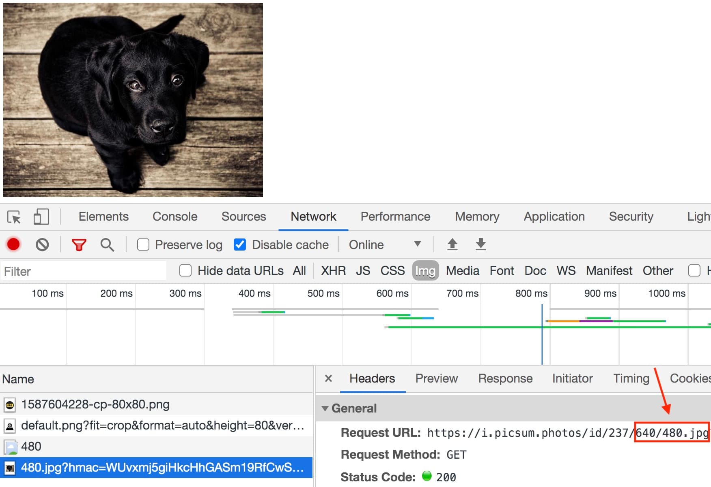

Для ретинізаціі фонового зображення необхідно задати розмір фону елемента, що дорівнює розміру самого елемента.
.box {
width: 200px;
height: 300px;
background-image: url('photo@2x.png');
background-size: 200px 300px;
}
У разі, коли в елемента немає фіксованої ширини і висоти, розмір фону можна задати значенням cover, щоб фон повністю заповнював елемент.
.box {
background-image: url('photo@2x.png');
background-size: cover;
}
За такого підходу браузер завантажить 2x зображення на будь-якому екрані - не ідеально. Тому існують медіа-функції, що дозволяють визначити щільність пікселів екрану в CSS. Всередині набору таких медіа-функцій перевизначаємо шлях до фонового зображення.
/* Базові стилі і 1x зображення */
.box {
width: 480px;
height: 320px;
background-image: url('photo.png');
background-size: 480px 320px;
}
/* Перевизначаємо шлях до 2x зображення,
якщо щільність екрану мінімум 2 */
@media (min-device-pixel-ratio: 2),
(min-resolution: 192dpi),
(min-resolution: 2dppx) {
.box {
background-image: url('photo@2x.png');
}
}
У медіа-функції min-device-pixel-ratio вказується числове значення піксельної щільності екрану - коефіцієнт між фізичними і CSS-пікселями. Також необхідно вказати функцію min-resolution з двома різними значеннями.
Медіа-функція min-device-pixel-ratio підтримується деякими браузерами тільки з вендорним префіксом, тому, якщо обробити цей код автопрефіксером , отримаємо фінальний варіант.
.box {
width: 480px;
height: 320px;
background-image: url('photo.png');
background-size: 480px 320px;
}
@media (min-device-pixel-ratio: 2),
(-webkit-min-device-pixel-ratio: 2),
(min-resolution: 192dpi),
(min-resolution: 2dppx) {
.box {
background-image: url('photo@2x.png');
}
}
Корисно:
Така солянка з медіа-функцій та їх значень потрібна тому, що вони ще не
стандартизовані між різними браузерами.
В прикладі задане однакове фонове зображення різних розмірів для екранів зі стандартною (1x), подвійною (2x) і потрійною (3x) щільністю пікселів.
See the Pen lesson-16-retinized-bg-image by goit-academy (@goit-academy) on CodePen.
Якщо відкрити інструменти розробника і перейти на вкладку Network, то буде видно, що завантажується тільки одне зображення, яке підходить для щільності екрана, на якому відкрита веб-сторінка. Відкриваючи з Macbook Pro 15 "2017, щільність пікселів екрану якого дорівнює 2, браузер завантажить зображення в два рази більше стандартного.
